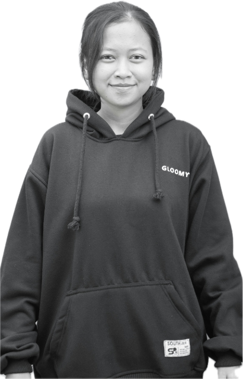

2025, one morning at a time
- 794hours given
- 205colleagues
- 28projects
Each lit day is one of the 28 projects colleagues ran in Singapore in 2025. Days and photos here are illustrative.
Volunteer with Singapore's charities in your 20 paid hours a year. Find a cause and sign up in two taps.


Whether you have one free morning a skill to share or a whole team behind you a charity in Singapore is counting on you.
Each lit day is one of the 28 projects colleagues ran in Singapore in 2025. Days and photos here are illustrative.
8 causes

Most colleagues start with a single morning. Pick a date, bring a friend, and we handle the rest.
Filter eight causes by what you care about and where you live.


A team lead meets you there and briefs everyone. Gloves and tools provided.
Join from any card. The invite lands in your calendar and the hours count toward your 20 paid ones. Change your mind? Leave up to 48 hours before.
Browse causes

Book a morning for your whole team and we will find a partner to host you.


Colleagues who turned up this month, and what keeps them coming back. Names, photos and quotes are illustrative samples.

Finance Food from the Heart
I came for one food drive. Three years on, the Saturday packing line is the best part of my month.
Cloud engineering Phone help for seniors
Showing an auntie how to spot a scam text takes ten minutes. She keeps that for years.
People team Reading buddies
The children do not care what I do at work. They care that I do the lion voice properly.
Sales Coastal clean-up
My team gets to know each other better on the beach at 7am than at any offsite.
Tap any photo to see it whole.
Pick a morning, add a colleague's name and send them a card. It lands in their inbox and on the team's wall.
The questions colleagues ask before their first event.
Yes. Oracle Singapore colleagues get 20 paid volunteer hours a year, on top of annual leave. Log them in My events after the day.
Pick a hands-on morning such as Food from the Heart or Willing Hearts. A team lead briefs everyone on arrival, so no experience is needed.
Yes. Book a morning for your team and the Oracle Charity team will find a partner who can host you, usually within two weeks.
Leave the event from My events at least 48 hours before, so a colleague on the waitlist can take your spot.
Oracle Cares helps colleagues hit by disaster or sudden hardship. Gifts go to the fund, never to one named person, so help reaches whoever needs it next.
Oracle matches your gift to eligible charities, dollar for dollar. Pick an amount to see where it lands.
Give to a Singapore IPC and you can claim $125 in tax deductions (250%, until 31 Dec 2026).
Payroll or card. Matching limits may apply; check the giving policy.